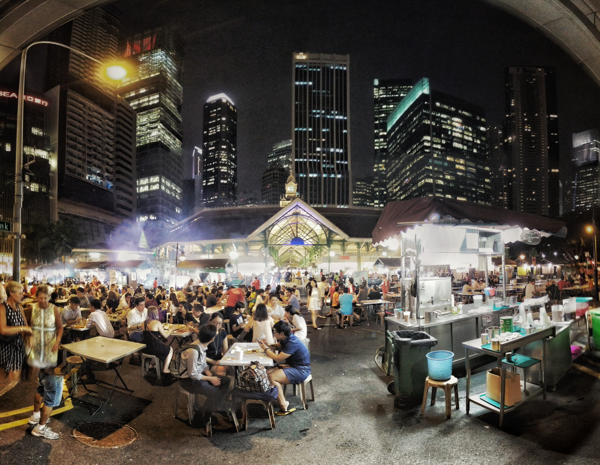
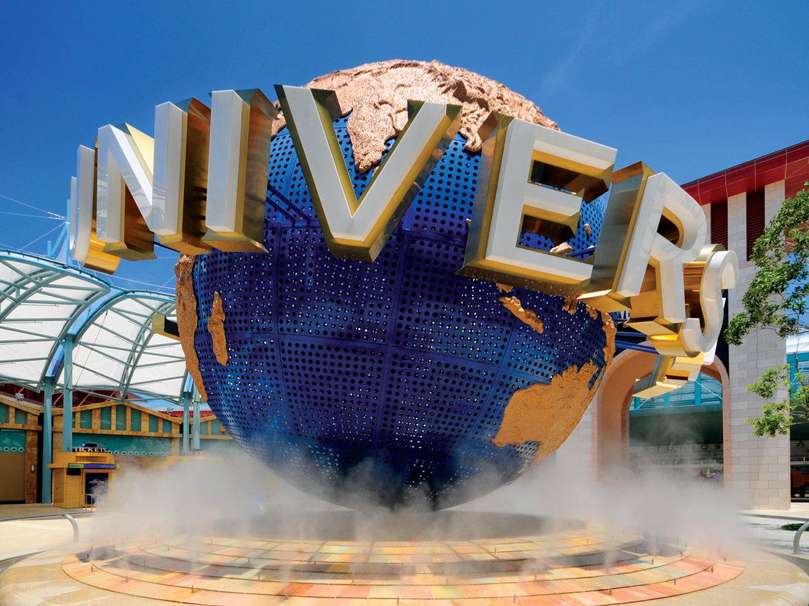
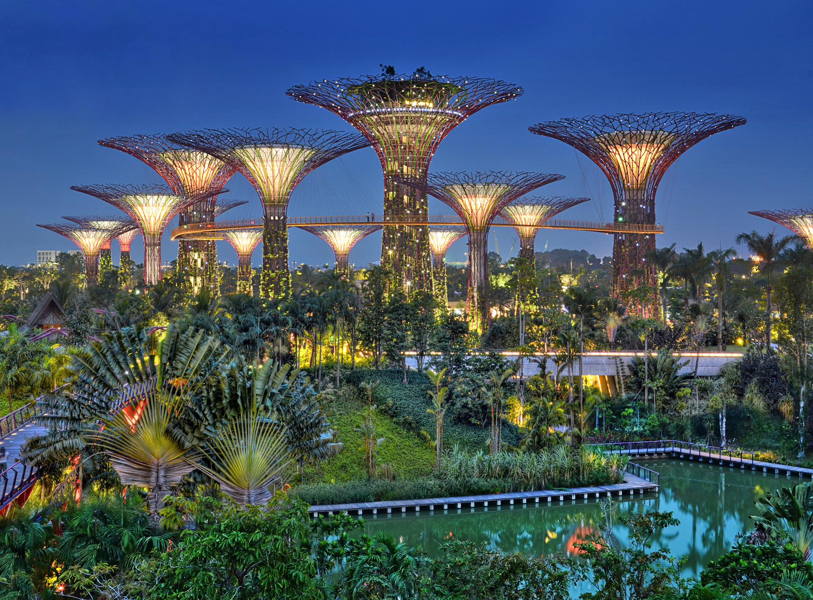
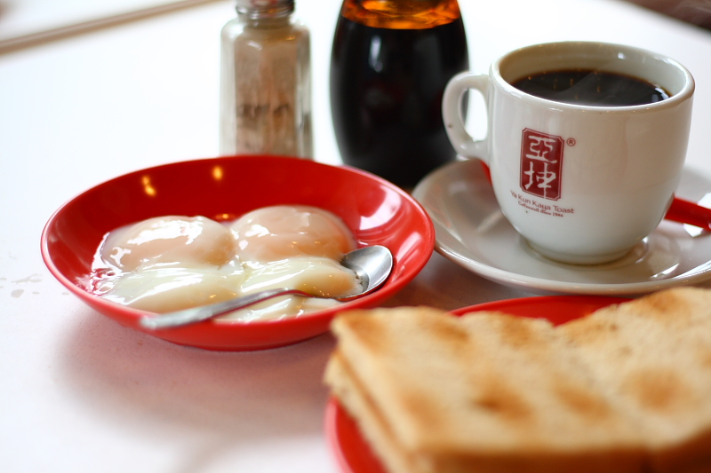

Travel Guide to Singapore
 Yong Jin Chun
Yong Jin Chun Singapore (official name: Republic of Singapore) is a Sovereign island,
city-state in Southeast Asia.
The population of Singapore is about 5.7 million residents, it has the second
greatest population destiny in the world.
Interesting fact: There are four official languages of Singapore: English, Malay, Chinese and Tamil.
What To Do in Singapore:

Image Marina Bay Sands Singapore is provided by Jimmy McIntyre
1. Visit the Crazy rich asians movie spots: Newton food center

The image Street food in Singapore is provided by Paolo Margari
Enjoy local vibe and food at singapore’s one of the best hawker centers Delicious yet affordable food fusion of chinese, indian and malay food. Well showing the diversity of culture in singapore.
2. Universal Studio Singapore at Sentosa Island

Image Universal Studios Singapore is provided by William Cho
Ticket Price:
Adult (Age 13-59) - SGD81
Child (Age 4-12) - SGD61
Senior (Age 60 and above) - SGD43
See Sentosa Website for more Information
Address:
Universal Studios Singapore
8 Sentosa Gateway,
Sentosa Island, Singapore 098269
Enjoy the Universal Studio in hot tropical weather.
Different Attractions like Aquarium, Water Park, Dolphin Island, Trick Eye Museum are also located at Sentosa Island!
Highly recommended for Everyone! Fun attractions available for adults, great for families with childrens.
3. Experience the human-made natures!
Garden By the Bay, Singapore Botanic Garden, Super Tree, Flower Dome

Image Supertree Grove lighting up for the evening is provided by William Cho
Gardens by the bay Website for more Information
Great places for some refresh, enjoy the nature, get away places in Singapore.
4. Picture time! Instagram-worthy picture spot
Marina Bay sands hotel

Image Aerial of the infinity rooftop pool Marina Bay Sands is provided by dronepicr
Opened in 2010, it was billed as the world’s most expensive standalone casino property at S$8 Billion.
Most luxurious, recognizable hotel in Singapore.
Designed by Moshe Safdie with more than 2500 rooms and suits and their infinity swimming pool located on the top floor 191m (627 ft) above the ground.
The mall below the Marina Bay Sands hotel has shops, Casino, ArtScience museum, Sands theatre and 80 celebrity chef restaurant
5. Must try breakfast in Singapore
Yakun Kaya Toast

Image Ya Kun Kaya Toast is provided by Andrew M. Annuar
Singapore’s favorite breakfast go-to spot and Kaya toast is a must try food in Singapore. Toast made with Kaya Jam (creamy coconut jam made with pandan leaf) Served with soft-boiled egg and coffee(coffee with sugar and milk) The first store of Ya Kun Kaya Toast opened in 1944.